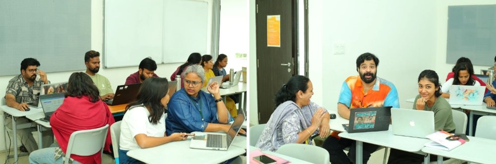

The situation
Student agency has always been something I care deeply about, especially when we talk about high-quality learning and teaching. I had the chance to lead a session at Sreenidhi International School on Showcasing Student Voice, Choice, and Ownership.
What we did
We spent time co-designing existing units and asking ourselves honest questions about what, where, when, why and how we can embed student agency more intentionally.

What I am grateful for
Thank you to Aprajita Ralli and Sonal Shrivastava for the opportunity, and for creating a space where these conversations can happen meaningfully.